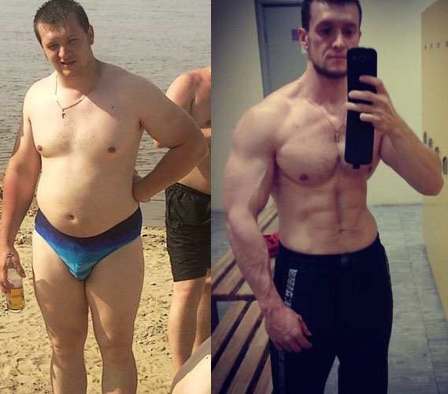

Топ 5 причин почему спорт это хорошо!
До и После

Мы часто жалуемся на депрессию и не знаем, как поднять себе настроение. Решение простое: заняться спортом. Во время тренировки ваш мозг освободится от проблем, а после окончания занятия вы почувствуете прилив положительной энергии. О проблемах вы даже не вспомните.ч